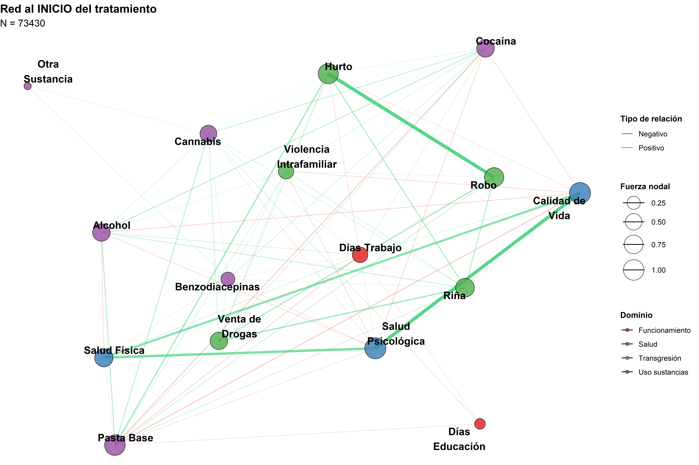
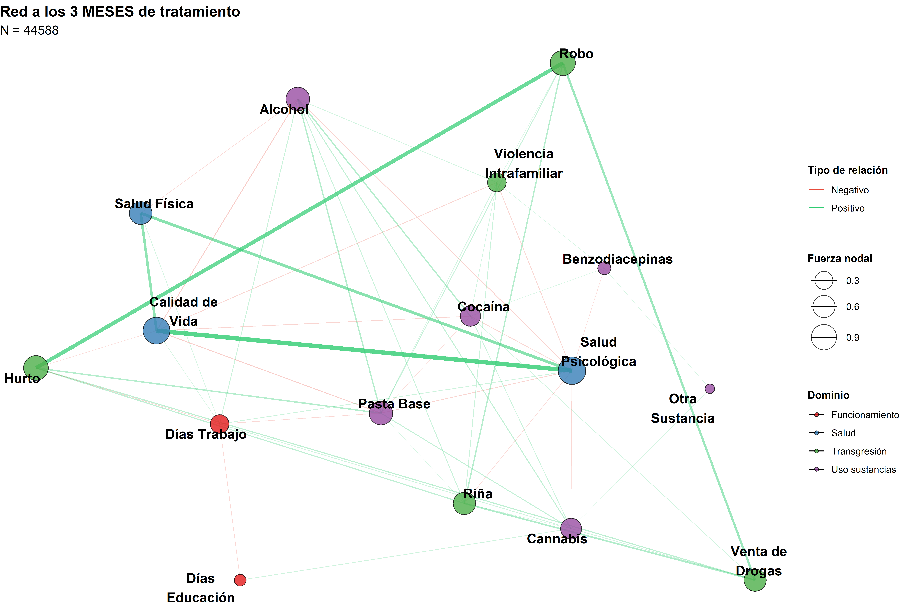
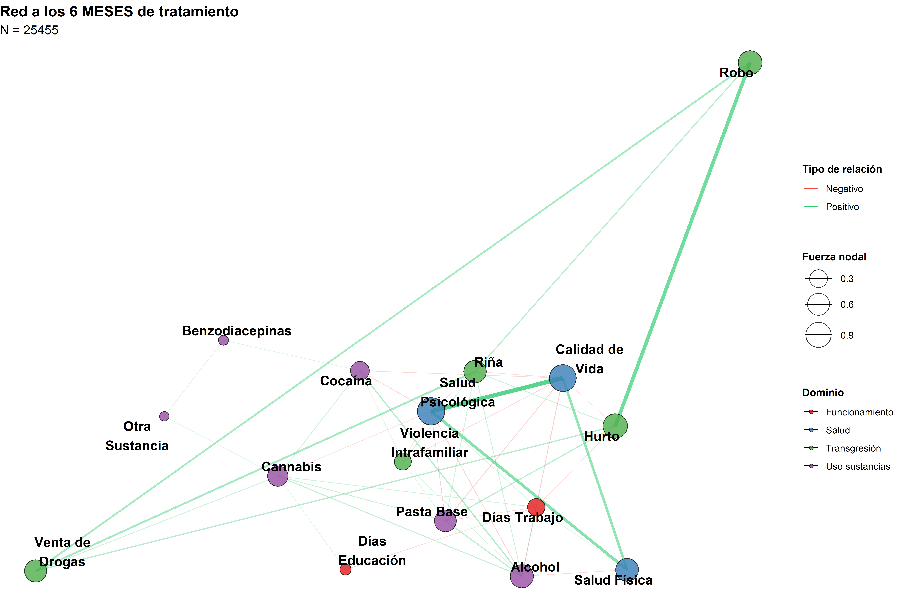
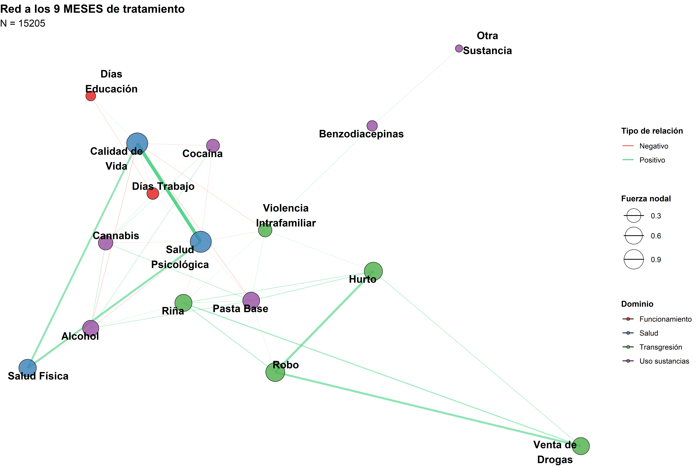
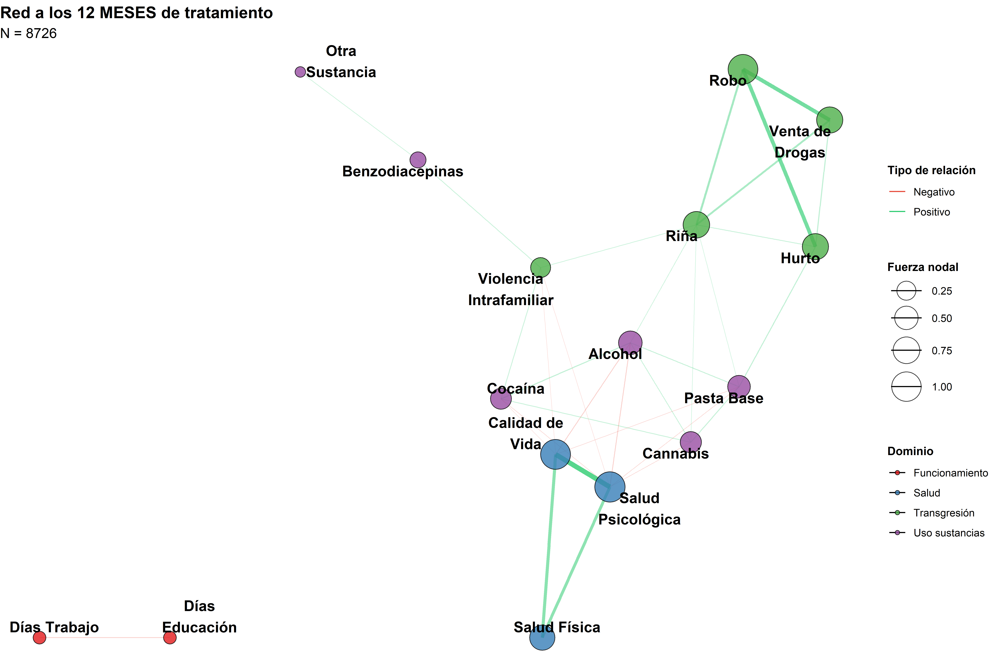

Los trastornos por uso de sustancias (TUS) constituyen una de las principales causas de carga de enfermedad y mortalidad evitable a escala global. En 2016 se calculó que más de 100 millones de personas sufrían trastorno por consumo de alcohol y decenas de millones presentaban dependencia de opioides, cannabis o cocaína1. La frecuente comorbilidad psiquiátrica, depresión, trastornos de ansiedad, psicosis o trastornos de personalidad multiplica la severidad clínica y los costes sociosanitarios2. Estudios hospitalarios europeos y norteamericanos muestran que alrededor del 20 % de las admisiones psiquiátricas corresponden a pacientes de sexo femenino con diagnóstico dual, fenómeno que favorece re-ingresos y estancias prolongadas3.
En Chile, las encuestas nacionales sitúan la prevalencia de abuso o dependencia de sustancias entre el 11 % y el 20 %, una de las más elevadas de Latinoamérica. Los registros hospitalarios concuerdan con las cifras internacionales: alrededor de una quinta parte de los internados en psiquiatría presenta un TCS como diagnóstico primario o secundario. Esta convergencia evidencia que la hospitalización psiquiátrica es un desenlace clínico crítico en la trayectoria de las adicciones, razón por la cual identificar sus factores determinantes resulta esencial para planificar intervenciones preventivas, asignar recursos y reducir la carga asistencial2,4–6.
2 Metodología
2.1 Descripción de los datos
Este es un estudio de cohorte retrospectiva de pacientes adultos en tratamiento por consumo de sustancias, con datos otorgados por el Servicio Nacional para la Prevención y Rehabilitación del Consumo de Drogas y Alcohol de Chile (SENDA) en convenio con el núcleo milenio de ánalisis de políticas públicas de drogas (nDP). La cohorte se construyó vinculando los registros administrativos de los pacientes (n = 223,061 episodios de tratamiento entre 97,698 personas en las 16 regiones del país).
Estos datos incluyen múltiples variables relacionadas al consumo y tratamiento rehabilitador de drogas. Entre estas variables esta la sustancia principal por la cual se trató al paciente y sustancias secundarias (alcohol, pasta base de cocaína, cocaína, marihuana, depresores del SNC u otras sustancias. Tambien está presente el número de reingresos a tratamiento (retratamientos, categorizados en 0, 1, 2, 3 o más reingresos), el tipo de plan de tratamiento (ambulatorio vs. residencial) y el historial clínico de salud mental de los pacientes.
El registro de pacientes en tratamiento se realizó en una plataforma electrónica denominada SISTRAT, que contenía información sociodemográfica, datos sobre el estado de salud y patrones de consumo de sustancias, entre otras variables, además de información sobre el propio tratamiento (p. ej., fecha de ingreso, egreso, tipo de tratamiento). Las base de datos se vincularon de forma determinista mediante un hash de 64 caracteres resultante del cifrado (con un algoritmo SHA-256) del número de identificación único de cada persona.
Código
# =====================================================# TOP 2015–2022: Carga robusta + Limpieza + Renombrado# Setup unificado (paquetes + opciones + tema + seed)# =====================================================# 0) Función robusta para instalar/cargar paquetes ----ensure_packages <-function(pkgs, repos =getOption("repos")) {stopifnot(is.character(pkgs), length(pkgs) >0)# Repos por defecto si no están definidosif (is.null(repos) ||is.na(repos["CRAN"]) || repos["CRAN"] =="@CRAN@") {options(repos =c(CRAN ="https://cloud.r-project.org")) }# Detectar faltantes missing_pkgs <- pkgs[!vapply(pkgs, requireNamespace, logical(1), quietly =TRUE)]# Instalar faltantes (con dependencias y en paralelo cuando sea posible)if (length(missing_pkgs)) { ncpus <-1Lif (requireNamespace("parallel", quietly =TRUE)) { ncpus <-max(1L, parallel::detectCores() -1L) }install.packages(missing_pkgs, dependencies =TRUE, Ncpus = ncpus) }# Cargar todos (incluye los que ya estaban)invisible(lapply(pkgs, function(p) {suppressPackageStartupMessages(library(p, character.only =TRUE) ) }))invisible(TRUE)}# 1) Declaración única de paquetes ----pkgs <-c(# utilidades / data wrangling"data.table", "stringr", "stringi", "janitor", "lubridate","dplyr", "purrr", "tibble", "openxlsx", "tidyverse",# redes y psicometría"igraph", "qgraph", "bootnet", "NetworkComparisonTest", "networktools",# modelos mixtos"lme4", "lmerTest", "broom.mixed",# grafos/visualización"ggraph", "tidygraph", "corrplot", "patchwork", "kableExtra", "plotly") |>unique()# 2) Carga de paquetes (instala si faltan) ----ensure_packages(pkgs)# 3) Configuración global knitr/figuras ----knitr::opts_chunk$set(message =FALSE,warning =FALSE,fig.align ="center",fig.width =10,fig.height =8,dpi =300)# 4) Temas y opciones de visualización ----theme_set(ggplot2::theme_minimal(base_size =12))# 5) Semilla global para reproducibilidad ----set.seed(2024)
Este análisis examina las redes psicométricas del Treatment Outcome Profile (TOP) en contexto longitudinal, evaluando la evolución de las relaciones entre consumo de sustancias, salud, inclusión social y riesgo durante el tratamiento de rehabilitación.
3.1 1.1 Hipótesis de Investigación
H1: La densidad de la red (fuerza global) disminuye significativamente entre el ingreso y los 6-12 meses de tratamiento, reflejando una desacoplación de síntomas.
H2: Las variables de salud (psicológica/física) aumentan su centralidad de puente entre dominios al avanzar el tratamiento.
H3: Los cambios en consumo de sustancias entre etapas predicen cambios en salud y calidad de vida (análisis de transiciones).
H4: Existen trayectorias heterogéneas de cambio identificables mediante modelos mixtos lineales.
4 2. Preparación de Datos
Código
# Definir nodos por dominio temático siguiendo el TOP completo# Sección 1: Uso de sustancias (días de consumo en últimas 4 semanas)vars_uso <-c("Alcohol", "Cannabis", "Pasta Base", "Cocaína", "Benzodiacepinas", "Otra Sustancia")# Sección 2: Transgresión de normas socialesvars_transgresion <-c("Hurto", "Robo", "Venta de Drogas", "Riña", "Violencia Intrafamiliar")# Sección 3: Salud y funcionamiento social vars_salud <-c("Salud Psicológica", "Salud Física", "Calidad de Vida")vars_funcionamiento <-c("Días Trabajo", "Días Educación")# Vector con todos los nodos del TOPnodes_all <-c(vars_uso, vars_transgresion, vars_salud, vars_funcionamiento)# Preparar datos con etapas estandarizadas y conversión de variables categóricas# NOTA: Ajustar nombres de columnas en datos_final para que coincidan con el formato TOPdat_analysis <- datos_final %>%# Renombrar columnas para coincidir con formato TOPrename("Alcohol"= total_alcohol,"Cannabis"= total_cannabis,"Pasta Base"= total_pasta_base,"Cocaína"= total_cocaina,"Benzodiacepinas"= total_benzodiacepinas,"Otra Sustancia"= total_otra_sustancia,"Hurto"= hurto,"Robo"= robo,"Venta de Drogas"= venta_de_drogas,"Riña"= rina,"Violencia Intrafamiliar"= total_violencia_intrafamiliar,"Salud Psicológica"= salud_psicologica,"Salud Física"= salud_fisica,"Calidad de Vida"= calidad_de_vida,"Días Trabajo"= total_trabajo,"Días Educación"= total_educacion ) %>%mutate(# Convertir variables categóricas Sí/No a numéricas (1/0)Hurto =ifelse(Hurto =="Sí", 1, 0),Robo =ifelse(Robo =="Sí", 1, 0),`Venta de Drogas`=ifelse(`Venta de Drogas`=="Sí", 1, 0), Riña =ifelse(Riña =="Sí", 1, 0),# Estandarizar nombres de etapasetapa_std =case_when(str_detect(etapa_tratamiento, "(?i)inicio") ~"Inicio",str_detect(etapa_tratamiento, "3") ~"3m",str_detect(etapa_tratamiento, "6") ~"6m",str_detect(etapa_tratamiento, "9") ~"9m",str_detect(etapa_tratamiento, "12") ~"12m",TRUE~NA_character_ ),# Convertir etapas a tiempo numérico (meses)tiempo_num =case_when( etapa_std =="Inicio"~0, etapa_std =="3m"~3, etapa_std =="6m"~6, etapa_std =="9m"~9, etapa_std =="12m"~12,TRUE~NA_real_ ) ) %>%filter(!is.na(etapa_std)) %>%select(HASHKEY, etapa_std, tiempo_num, all_of(nodes_all)) %>%drop_na(any_of(vars_salud))# Crear tabla resumen de datosresumen_datos <-data.frame(`Métrica`=c("Total observaciones", "Pacientes únicos"),`Valor`=c(nrow(dat_analysis), n_distinct(dat_analysis$HASHKEY)),check.names =FALSE)resumen_datos %>%kable(caption ="Dimensiones del dataset") %>%kable_styling(full_width =FALSE)
Dimensiones del dataset
Métrica
Valor
Total observaciones
167404
Pacientes únicos
56998
Código
# Distribución por etapadistribucion_etapas <-as.data.frame(table(dat_analysis$etapa_std))names(distribucion_etapas) <-c("Etapa", "Número de observaciones")distribucion_etapas %>%kable(caption ="Distribución de observaciones por etapa") %>%kable_styling(full_width =FALSE)
Distribución de observaciones por etapa
Etapa
Número de observaciones
12m
8726
3m
44588
6m
25455
9m
15205
Inicio
73430
5 3. Análisis de Redes Transversales por Etapa
5.1 3.1 Estimación de Redes
Código
# Función para estimar red por etapaestimate_stage_network <-function(data, stage, nodes) {# Filtrar datos de la etapa específica stage_data <- data %>%filter(etapa_std == stage) %>%select(all_of(nodes)) %>%drop_na() %>%mutate(across(everything(), ~scale(.)[,1])) # Estandarizar variables# Verificar tamaño mínimo de muestraif(nrow(stage_data) <50) return(NULL)# Estimar red con EBIC-glassoestimateNetwork( stage_data,default ="EBICglasso",corMethod ="cor_auto",tuning =0.5,threshold =TRUE )}# Estimar redes para cada etapa temporalstages <-c("Inicio", "3m", "6m", "9m", "12m")networks_by_stage <-map(stages, ~estimate_stage_network(dat_analysis, .x, nodes_all))names(networks_by_stage) <- stages# Filtrar redes NULLnetworks_by_stage <- networks_by_stage[!sapply(networks_by_stage, is.null)]# Mostrar resumen de redes estimadasresumen_redes <-data.frame(`Etapa`=names(networks_by_stage),`Red estimada`="Sí",check.names =FALSE)
5.2 3.2 Visualización de Redes - Inicio
Código
# Red al inicio del tratamientoif("Inicio"%in%names(networks_by_stage)) { net <- networks_by_stage[["Inicio"]]# Calcular strength (fuerza) de cada nodo adj_matrix <- net$graph node_strength <-rowSums(abs(adj_matrix))# Crear grafo con valores absolutos para el layout g_for_layout <-as_tbl_graph(abs(net$graph), directed =FALSE)# Grafo real con pesos originales g <-as_tbl_graph(net$graph, directed =FALSE) %>%activate(nodes) %>%mutate(name =colnames(net$graph),domain =case_when( name %in% vars_uso ~"Uso sustancias", name %in% vars_transgresion ~"Transgresión", name %in% vars_salud ~"Salud", name %in% vars_funcionamiento ~"Funcionamiento" ),strength = node_strength )# Calcular coordenadas del layout layout_coords <-create_layout(g_for_layout, layout ='stress')# Aplicar coordenadas al grafo g <- g %>%activate(nodes) %>%mutate(x = layout_coords$x[1:vcount(.)],y = layout_coords$y[1:vcount(.)])# Crear visualización con leyenda mejoradaggraph(g, layout ='manual', x = x, y = y) +geom_edge_link(aes(width =abs(weight), alpha =abs(weight),color =ifelse(weight >0, "Positivo", "Negativo")),show.legend =TRUE) +geom_node_point(aes(size = strength, fill = domain), shape =21, color ="black", alpha =0.8) +geom_node_text(aes(label =str_wrap(name, 12)), size =4.5, repel =TRUE, fontface ="bold") +scale_edge_width_continuous(range =c(0.2, 2), guide ="none") +scale_edge_alpha_continuous(range =c(0.2, 0.8), guide ="none") +scale_edge_color_manual(values =c("Positivo"="#2ecc71", "Negativo"="#e74c3c"),name ="Tipo de relación") +scale_fill_brewer(palette ="Set1", name ="Dominio") +scale_size_continuous(range =c(4, 12), name ="Fuerza nodal") +labs(title ="Red al INICIO del tratamiento",subtitle =paste("N =", nrow(filter(dat_analysis, etapa_std =="Inicio")))) +theme_void() +theme(plot.title =element_text(size =14, face ="bold"),plot.subtitle =element_text(size =12),legend.position ="right",legend.direction ="vertical",legend.box ="vertical",legend.box.just ="left",legend.margin =margin(10, 10, 10, 10),legend.spacing =unit(1, "lines"),legend.title =element_text(face ="bold", size =10),legend.text =element_text(size =9))}

5.3 3.3 Visualización de Redes - 3 meses
Código
# Red a los 3 meses de tratamientoif("3m"%in%names(networks_by_stage)) { net <- networks_by_stage[["3m"]] adj_matrix <- net$graph node_strength <-rowSums(abs(adj_matrix)) g_for_layout <-as_tbl_graph(abs(net$graph), directed =FALSE) g <-as_tbl_graph(net$graph, directed =FALSE) %>%activate(nodes) %>%mutate(name =colnames(net$graph),domain =case_when( name %in% vars_uso ~"Uso sustancias", name %in% vars_transgresion ~"Transgresión", name %in% vars_salud ~"Salud", name %in% vars_funcionamiento ~"Funcionamiento" ),strength = node_strength ) layout_coords <-create_layout(g_for_layout, layout ='stress') g <- g %>%activate(nodes) %>%mutate(x = layout_coords$x[1:vcount(.)],y = layout_coords$y[1:vcount(.)])ggraph(g, layout ='manual', x = x, y = y) +geom_edge_link(aes(width =abs(weight), alpha =abs(weight),color =ifelse(weight >0, "Positivo", "Negativo")),show.legend =TRUE) +geom_node_point(aes(size = strength, fill = domain), shape =21, color ="black", alpha =0.8) +geom_node_text(aes(label =str_wrap(name, 12)), size =4.5, repel =TRUE, fontface ="bold") +scale_edge_width_continuous(range =c(0.2, 2), guide ="none") +scale_edge_alpha_continuous(range =c(0.2, 0.8), guide ="none") +scale_edge_color_manual(values =c("Positivo"="#2ecc71", "Negativo"="#e74c3c"),name ="Tipo de relación") +scale_fill_brewer(palette ="Set1", name ="Dominio") +scale_size_continuous(range =c(4, 12), name ="Fuerza nodal") +labs(title ="Red a los 3 MESES de tratamiento",subtitle =paste("N =", nrow(filter(dat_analysis, etapa_std =="3m")))) +theme_void() +theme(plot.title =element_text(size =14, face ="bold"),plot.subtitle =element_text(size =12),legend.position ="right",legend.direction ="vertical",legend.box ="vertical",legend.box.just ="left",legend.margin =margin(10, 10, 10, 10),legend.spacing =unit(1, "lines"),legend.title =element_text(face ="bold", size =10),legend.text =element_text(size =9))}

5.4 3.4 Visualización de Redes - 6 meses
Código
# Red a los 6 meses de tratamientoif("6m"%in%names(networks_by_stage)) { net <- networks_by_stage[["6m"]] adj_matrix <- net$graph node_strength <-rowSums(abs(adj_matrix)) g_for_layout <-as_tbl_graph(abs(net$graph), directed =FALSE) g <-as_tbl_graph(net$graph, directed =FALSE) %>%activate(nodes) %>%mutate(name =colnames(net$graph),domain =case_when( name %in% vars_uso ~"Uso sustancias", name %in% vars_transgresion ~"Transgresión", name %in% vars_salud ~"Salud", name %in% vars_funcionamiento ~"Funcionamiento" ),strength = node_strength ) layout_coords <-create_layout(g_for_layout, layout ='stress') g <- g %>%activate(nodes) %>%mutate(x = layout_coords$x[1:vcount(.)],y = layout_coords$y[1:vcount(.)])ggraph(g, layout ='manual', x = x, y = y) +geom_edge_link(aes(width =abs(weight), alpha =abs(weight),color =ifelse(weight >0, "Positivo", "Negativo")),show.legend =TRUE) +geom_node_point(aes(size = strength, fill = domain), shape =21, color ="black", alpha =0.8) +geom_node_text(aes(label =str_wrap(name, 12)), size =4.5, repel =TRUE, fontface ="bold") +scale_edge_width_continuous(range =c(0.2, 2), guide ="none") +scale_edge_alpha_continuous(range =c(0.2, 0.8), guide ="none") +scale_edge_color_manual(values =c("Positivo"="#2ecc71", "Negativo"="#e74c3c"),name ="Tipo de relación") +scale_fill_brewer(palette ="Set1", name ="Dominio") +scale_size_continuous(range =c(4, 12), name ="Fuerza nodal") +labs(title ="Red a los 6 MESES de tratamiento",subtitle =paste("N =", nrow(filter(dat_analysis, etapa_std =="6m")))) +theme_void() +theme(plot.title =element_text(size =14, face ="bold"),plot.subtitle =element_text(size =12),legend.position ="right",legend.direction ="vertical",legend.box ="vertical",legend.box.just ="left",legend.margin =margin(10, 10, 10, 10),legend.spacing =unit(1, "lines"),legend.title =element_text(face ="bold", size =10),legend.text =element_text(size =9))}

5.5 3.5 Visualización de Redes - 9 meses
Código
# Red a los 9 meses de tratamientoif("9m"%in%names(networks_by_stage)) { net <- networks_by_stage[["9m"]] adj_matrix <- net$graph node_strength <-rowSums(abs(adj_matrix)) g_for_layout <-as_tbl_graph(abs(net$graph), directed =FALSE) g <-as_tbl_graph(net$graph, directed =FALSE) %>%activate(nodes) %>%mutate(name =colnames(net$graph),domain =case_when( name %in% vars_uso ~"Uso sustancias", name %in% vars_transgresion ~"Transgresión", name %in% vars_salud ~"Salud", name %in% vars_funcionamiento ~"Funcionamiento" ),strength = node_strength ) layout_coords <-create_layout(g_for_layout, layout ='stress') g <- g %>%activate(nodes) %>%mutate(x = layout_coords$x[1:vcount(.)],y = layout_coords$y[1:vcount(.)])ggraph(g, layout ='manual', x = x, y = y) +geom_edge_link(aes(width =abs(weight), alpha =abs(weight),color =ifelse(weight >0, "Positivo", "Negativo")),show.legend =TRUE) +geom_node_point(aes(size = strength, fill = domain), shape =21, color ="black", alpha =0.8) +geom_node_text(aes(label =str_wrap(name, 12)), size =4.5, repel =TRUE, fontface ="bold") +scale_edge_width_continuous(range =c(0.2, 2), guide ="none") +scale_edge_alpha_continuous(range =c(0.2, 0.8), guide ="none") +scale_edge_color_manual(values =c("Positivo"="#2ecc71", "Negativo"="#e74c3c"),name ="Tipo de relación") +scale_fill_brewer(palette ="Set1", name ="Dominio") +scale_size_continuous(range =c(4, 12), name ="Fuerza nodal") +labs(title ="Red a los 9 MESES de tratamiento",subtitle =paste("N =", nrow(filter(dat_analysis, etapa_std =="9m")))) +theme_void() +theme(plot.title =element_text(size =14, face ="bold"),plot.subtitle =element_text(size =12),legend.position ="right",legend.direction ="vertical",legend.box ="vertical",legend.box.just ="left",legend.margin =margin(10, 10, 10, 10),legend.spacing =unit(1, "lines"),legend.title =element_text(face ="bold", size =10),legend.text =element_text(size =9))}

5.6 3.6 Visualización de Redes - 12 meses
Código
# Red a los 12 meses de tratamientoif("12m"%in%names(networks_by_stage)) { net <- networks_by_stage[["12m"]] adj_matrix <- net$graph node_strength <-rowSums(abs(adj_matrix)) g_for_layout <-as_tbl_graph(abs(net$graph), directed =FALSE) g <-as_tbl_graph(net$graph, directed =FALSE) %>%activate(nodes) %>%mutate(name =colnames(net$graph),domain =case_when( name %in% vars_uso ~"Uso sustancias", name %in% vars_transgresion ~"Transgresión", name %in% vars_salud ~"Salud", name %in% vars_funcionamiento ~"Funcionamiento" ),strength = node_strength ) layout_coords <-create_layout(g_for_layout, layout ='stress') g <- g %>%activate(nodes) %>%mutate(x = layout_coords$x[1:vcount(.)],y = layout_coords$y[1:vcount(.)])ggraph(g, layout ='manual', x = x, y = y) +geom_edge_link(aes(width =abs(weight), alpha =abs(weight),color =ifelse(weight >0, "Positivo", "Negativo")),show.legend =TRUE) +geom_node_point(aes(size = strength, fill = domain), shape =21, color ="black", alpha =0.8) +geom_node_text(aes(label =str_wrap(name, 12)), size =4.5, repel =TRUE, fontface ="bold") +scale_edge_width_continuous(range =c(0.2, 2), guide ="none") +scale_edge_alpha_continuous(range =c(0.2, 0.8), guide ="none") +scale_edge_color_manual(values =c("Positivo"="#2ecc71", "Negativo"="#e74c3c"),name ="Tipo de relación") +scale_fill_brewer(palette ="Set1", name ="Dominio") +scale_size_continuous(range =c(4, 12), name ="Fuerza nodal") +labs(title ="Red a los 12 MESES de tratamiento",subtitle =paste("N =", nrow(filter(dat_analysis, etapa_std =="12m")))) +theme_void() +theme(plot.title =element_text(size =14, face ="bold"),plot.subtitle =element_text(size =12),legend.position ="right",legend.direction ="vertical",legend.box ="vertical",legend.box.just ="left",legend.margin =margin(10, 10, 10, 10),legend.spacing =unit(1, "lines"),legend.title =element_text(face ="bold", size =10),legend.text =element_text(size =9))}

6 4. Métricas de Red
Código
# Función para calcular métricas de redcalculate_network_metrics <-function(net, stage_name) {if(is.null(net)) return(NULL)# Crear grafos con pesos absolutos y sin pesos g_weighted <-graph_from_adjacency_matrix(abs(as.matrix(net$graph)),mode ="undirected",weighted =TRUE ) g_unweighted <-graph_from_adjacency_matrix(as.matrix(net$graph !=0),mode ="undirected",weighted =NULL )# Métricas globales de la red global_metrics <-data.frame(`Etapa`= stage_name,`Nodos`=vcount(g_weighted),`Aristas`=ecount(g_weighted),`Densidad`=edge_density(g_unweighted),`Fuerza global`=sum(abs(net$graph)),`Longitud promedio`=mean_distance(g_unweighted),`Coeficiente agrupamiento`=transitivity(g_unweighted, type ="global"),`Modularidad`=tryCatch(modularity(cluster_louvain(g_weighted)),error =function(e) NA_real_ ),check.names =FALSE )# Métricas por nodo node_metrics <-data.frame(`Etapa`= stage_name,`Nodo`=colnames(net$graph),`Grado`=degree(g_unweighted),`Fuerza`=rowSums(abs(net$graph)),`Intermediación`=betweenness(g_unweighted, normalized =TRUE),`Cercanía`=closeness(g_unweighted, normalized =TRUE),`Centralidad eigenvector`=tryCatch(eigen_centrality(g_weighted)$vector,error =function(e) rep(NA_real_, vcount(g_weighted)) ),check.names =FALSE )list(global = global_metrics, nodes = node_metrics)}# Calcular métricas para todas las etapasall_metrics <-map2(networks_by_stage, names(networks_by_stage), calculate_network_metrics)# Combinar métricas globalesglobal_metrics_df <-map_df(all_metrics, "global")# Mostrar tabla de métricas globalesglobal_metrics_df %>%kable(digits =3, caption ="Propiedades globales de red por etapa") %>%kable_styling(full_width =FALSE)
Propiedades globales de red por etapa
Etapa
Nodos
Aristas
Densidad
Fuerza global
Longitud promedio
Coeficiente agrupamiento
Modularidad
Inicio
16
69
0.575
10.187
1.442
0.669
0.313
3m
16
53
0.442
9.052
1.642
0.581
0.380
6m
16
46
0.383
8.552
1.800
0.571
0.415
9m
16
39
0.325
8.068
2.050
0.538
0.441
12m
16
32
0.267
8.298
2.065
0.550
0.479
6.1 4.1 Evolución de Métricas
Código
# Preparar datos para visualizaciónmetrics_long <- global_metrics_df %>%select(`Etapa`, `Fuerza global`, `Densidad`, `Coeficiente agrupamiento`, `Longitud promedio`) %>%pivot_longer(-`Etapa`, names_to ="Métrica", values_to ="Valor") %>%mutate(Etapa =factor(Etapa, levels =c("Inicio", "3m", "6m", "9m", "12m")))# Gráfico de evolución de métricasggplot(metrics_long, aes(x = Etapa, y = Valor, group = Métrica, color = Métrica)) +geom_line(size =1.2) +geom_point(size =3) +facet_wrap(~Métrica, scales ="free_y", ncol =2) +scale_color_brewer(palette ="Set2") +labs(title ="Evolución de métricas de red durante el tratamiento",x ="Etapa de tratamiento",y ="Valor") +theme(legend.position ="none",axis.text.x =element_text(angle =45, hjust =1))
# Evaluar resultados de hipótesish1_result <-if(!is.null(nct_inicio_6m)) { nct_inicio_6m$glstrinv.pval <0.05} else {NA}h2_result <-if(nrow(h2_test) >=2) { any_12m <- h2_test$`Media influencia puente`[h2_test$`Etapa`=="12m"] any_inicio <- h2_test$`Media influencia puente`[h2_test$`Etapa`=="Inicio"]if(length(any_12m) >0&&length(any_inicio) >0) { any_12m > any_inicio } else {NA }} else {NA}# Crear tabla resumen de hipótesissummary_findings <-data.frame(`Hipótesis`=c("H1", "H2", "H3", "H4"),`Descripción`=c("Disminución de densidad con tratamiento","Aumento de puente en variables salud","Consumo predice cambios en salud","Heterogeneidad en trayectorias" ),`Resultado`=c(ifelse(!is.na(h1_result) && h1_result, "Soportada", ifelse(is.na(h1_result), "No evaluable", "No soportada")),ifelse(!is.na(h2_result) && h2_result, "Soportada", ifelse(is.na(h2_result), "No evaluable", "No soportada")),ifelse(!is.null(model_salud_psic), "Parcialmente soportada", "No evaluable"),ifelse(!is.null(model_salud_psic) &&!isSingular(model_salud_psic), "Soportada", "No evaluable") ),`Evidencia`=c(ifelse(!is.null(nct_inicio_6m), paste("p =", round(nct_inicio_6m$glstrinv.pval, 3)), "NCT no ejecutado"),ifelse(!is.na(h2_result), "Cambio en bridge EI evaluado", "No evaluado"),"Ver tabla de modelos mixtos",ifelse(!is.null(model_salud_psic), "Varianza en efectos aleatorios", "No evaluado") ),check.names =FALSE)# Mostrar tabla resumen finalsummary_findings %>%kable(caption ="Resumen de contraste de hipótesis") %>%kable_styling(full_width =FALSE) %>%column_spec(3, color =ifelse(summary_findings$Resultado =="Soportada", "green", ifelse(summary_findings$Resultado =="No soportada","red", "orange")))
Resumen de contraste de hipótesis
Hipótesis
Descripción
Resultado
Evidencia
H1
Disminución de densidad con tratamiento
Soportada
p = 0.002
H2
Aumento de puente en variables salud
Soportada
Cambio en bridge EI evaluado
H3
Consumo predice cambios en salud
Parcialmente soportada
Ver tabla de modelos mixtos
H4
Heterogeneidad en trayectorias
Soportada
Varianza en efectos aleatorios
Referencias
1. Volkow, N. D., & Blanco, C. (2023). Substance use disorders: a comprehensive update of classification, epidemiology, neurobiology, clinical aspects, treatment and prevention. World Psychiatry, 22(2), 203-229. https://doi.org/10.1002/wps.21073
2. Connery, H. S., McHugh, R. K., Reilly, M., Shin, S., & Greenfield, S. F. (2020). Substance Use Disorders in Global Mental Health Delivery: Epidemiology, Treatment Gap, and Implementation of Evidence-Based Treatments. Harvard Review of Psychiatry, 28(5), 316-327. https://doi.org/10.1097/HRP.0000000000000271
3. Gómez-Sánchez-Lafuente, C., Guzman-Parra, J., Suarez-Perez, J., Bordallo-Aragon, A., Rodriguez-de-Fonseca, F., & Mayoral-Cleries, F. (2022). Trends in Psychiatric Hospitalizations of Patients With Dual Diagnosis in Spain. Journal of Dual Diagnosis, 18(2), 92-100. https://doi.org/10.1080/15504263.2022.2053770
4. Saxena, S., Thornicroft, G., Knapp, J., & Whiteford, M. (2007). Resources for mental health: scarcity, inequity, and inefficiency. World Psychiatry, 6(1), 1-10. https://doi.org/10.1002/wps.21073
5. Gómez-Sánchez-Lafuente, C., Guzman-Parra, J., Suarez-Perez, J., Mayoral-Cleries, F., & Rodriguez-de-Fonseca, F. (2016). Dual Diagnosis in Spain: Prevalence, Sociodemographic Profile, and Psychiatric Comorbidity in a Sample of Patients Admitted to Psychiatric Inpatient Units. Journal of Dual Diagnosis, 12(3-4), 249-258. https://doi.org/10.1080/15504263.2016.1220207
6. Rojas, G., Gaete, M., Guajardo, M., Martínez, M., Martínez, M., Fritsch, R., & Araya, R. (2002). Prevalencia de trastornos psiquiátricos en pacientes hospitalizados en un hospital general. Revista Médica de Chile, 130(6), 689-696. https://doi.org/10.4067/S0034-98872002000600008
![]()